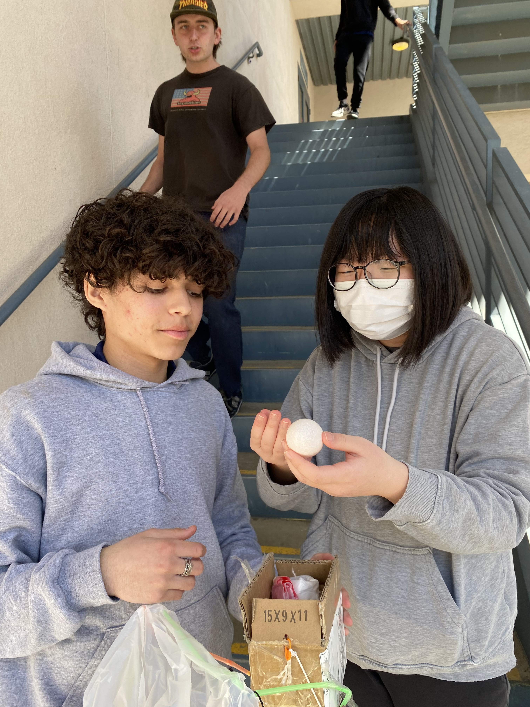
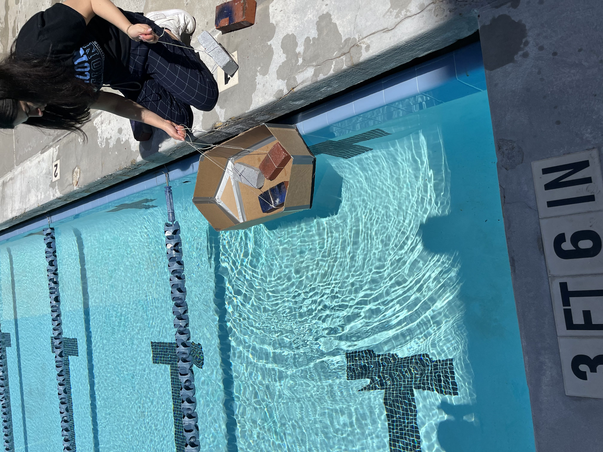
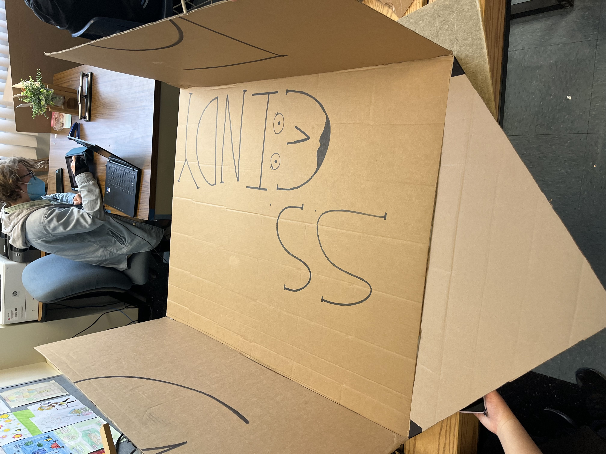
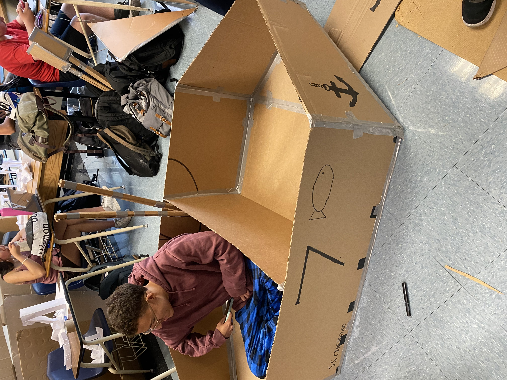

Hello from Roman Khachadoorian
Welcome to my website
This is my engineering website
This is where I will be doing
updates of my progress
Week 2
Today i made a rocket in tinkerCAD September 2,2022. I did not realize at the time that we were making home appliances in tinkerCAD so i ended up making a rocket. It looks very realistic.
Week 3
September 7,2022- i finished my tinekrcad design for the Rube Goldberg machine, im confident in the design.
September 9,2022- Today we were assigned a task to create the letter E made from a piece of paper. We measured every side and cut it out.
September 14,2022- our group finished the tinkerCAD project we had chosen, i have high hopes for the design since we tested it several times and each time it did not break.
Week 4
September 16,2022- i made a paper boat that floated for almost two minutes, the boat had 80g of weights in it. The problem was that the walls were not strong enough and eventually collapsed. Our group boat did not last very long, it sank as soon as we put it in since the sides were not tall enough to keep water out.
Week 5
September 21,2022- The Rube Goldberg project our group designed successfully popped the balloon on the first attempt. A pulley with a basket attached to it used a baseball to weigh down one side so the othe side jumps up. We put a spike on one end which would come up and pop the balloon.
Week 6
September 28,2022- Our group dissected a computer and labeled each part with colored pencils. Some parts were difficult to identify since the computer was old.
Week 7
October 5,2022- My job was to design an animal prosthetic and i think i did a good job of it. I designed a prosthetic eagle beak that is 3d printed and made of a plastic polymer.
October 7,2022- I created very specific instructions on how to make a peanut butter and jelly sandwich. I also watched someone make a peanut butter and jelly sandwich using instructions from the class.
Week 8
October 11,2022- We designed bottle rockets that would fly sideways and created a BOM(Bill of Materials) that lists everything we used in the rocket building. We created the rocket designs on tinkerCAD and that will be built with cardboard.
Week 9
October 13,2022- Flying paper challenge. We made paper airplanes and the challenge was to land one in a bucket. No one could land it in the bucket but some got real close, mine overshot the bucket by a long shot.
Week 10
October 15,2022- Today we went outside and created DIY water filters inside of 2L coke bottles using big rocks, small rocks, sand, and cotton. We arranged the materials in such a way that it would filter the water as it poured down the coke bottle.
Week 11
November 1, 2022- Our class studied Ohm's law and how voltage, resistance, and current work in circuits. We did some math too with resistance and voltage calculations.
November 4, 2022- We created circuit boards in tinkerCAD designing series and parallel circuits of LED lights.
Week 12
November 8,2022- I practiced using a multimeter and designing an actual circuit board using an arduino that we connected to our chromebook. We experimented with the circuit design until it worked.
S2 Week 1
This week Christian and I created a shark tank presentation for an app that allowed you to virtually try on clothes before buying them. We asked for $500,000 for a 20% stake in the company and answered some questions.
S2 Week 2
This week was chemical engineering week and we were tasked with finding a solution to a problem which involved a reserrvoir being contaminated if it was exposed to sunlight. The solution was to use little black rubber balls to block the sun, this option was cost effective and solved the problem.
S2 Week 3
Today we start our engineering project and we can choose between a mechanical, electrical, or civil engineering project. I choose the electrical engineering project in my proposal which was a RC car we have to make from scratch.
S2 Week 4
We continue the engineering project by creating a tinkerCAD of what we are going to make. I made a RC car that has 4 wheels powered by motors and remotely controlled with a bluetooth module.
Project 1
During the building of the arduino RC car our first problem was connecting pieces on the breadboard. We looked up tutorials and had partial success. We eventually asked Mr.Kim how to do the wiring and he helped us with the breadboard.
As for the body of the car, Christian worked on that while i did the wiring and he built a 5"by 8" cardboard body to place the parts on. We had to make two cardboard wheels since we were not provided with two extra motors or wheels.
Our final struggle was coding the arduino to remotely control the car. The problem with this is that it relies on a bluetooth module to control the car but there were no apps on the app store to do this so we did not know what to do. Christian came up with a solution by coding it so the car repeats a very long loop that makes it seem its moving on its own.
S2 Week 10
On week 10 of semester 2 we created sketches of a container that would hold an egg and protect it from a two story fall. We also grouped up and chose a sketch to create. We designed the chosen sketch on tinkerCAD.
S2 Week 11
This week our group started building the device that would hold the egg and eventually created it. The container is a small cardboard box that is held by straws and pencils which are connected to a garbage bag which acts as a parachute. We tested the design and the egg did not crack. Overall i would say the egg drop test was a success.

S2 Week 12
On week 12 we started a cardboat boat project. During this project we will create and test a cardboard boat with the objective of being able to hold two people in one boat without sinking and making it to the other side of the pool without sinking. We each created a sketch of what our boat would look like with measurements and grouped up together. Each group chose a sketch and started designing a tinkerCAD of it.
S2 Week 13
Our group began drawing pieces of cardboar to cut out for our project. We first started by cutting out the walls since we were going to use a single piece of uncut cardboard as our base. We then started working on the hull and back by cutting the pieces out. We would also have to create a prototype to test so we would cut that out after we were done cutting out our actual boat. As for how we cut the pieces we cut the individual pieces from a large piece of cardboard instead of cutting large strips into smaller pieces. The boat consists of 9 pieces of cardboard with two being the side walls, 6 for the hull and back, and one big piece for the bottom.
S2 Week 14
This week the goal was to create a prototype of our original boat and test it with bricks as weights to see if the design works. We cut out all the pieces in a 1 to 3 scale i believe and taped them together. Our prototype was much bigger than any other groups so it would be able to hold more weight. When we took it out to the pool for testing it was able to hold all the bricks with ease, although it was leaking slightly. Ms.Petrosian even stepped foot in the boat and it was able to hold about 60 pounds if i had to guess. Below is a picture of Ms.Petrosian testing the prototype boat.

S2 Week 15
Week 15 consisted of us building our actual boat after we had tested the prototpyes last week. We began to first draw up our cuts on the cardboard and cut the necessary pieces. Our boat would be made of 9 individual pieces that will be later taped together but for now we cut the larger pieces to create the frame of the boat and taped it together on the outside. In the picture you can see on the baot it says "SS Cindy" since we named it after Colin's mom. Its currently in progress but the general shape of the boat can be seen. The minimal tape we have to hold it together wont be enough for now but we just need the pieces to stay together until next week.

S2 Week 16
Now that we have tape this week we were able to begin building our boat and taping the pieces together. The joints on the inside and outside were taped together to ensure that the baot would not come apart later on. Although i have to say the tape we received was subpar compared to the gorilla tape we had last week. It isnt as adhesive and seems cheap compared to the gorila tape. Unfortunately i wasnt able to find a photo for this weeks progress but you can use your imagination to create a boat from the picture above.
S2 Week 17
We continued to build the boat on week 17 by adding a second piece to the bottom for durability. The idea is that if we have two pieces instead of one on the bottom, the water wont immediately sink the boat since cardboard tends to become soft when its wet. We also had a roller coaster challenge this week, having to create a roller coaster out of paper. It has to consist of at least one vertical loop, one horizontal loop, and be able to carry a marble all the way. I was absent on friday so i had to create my rollercoaster in the later week.
S2 Week 18
Now we put the finishing touches on the boat and completed it by adding aesthetic features such as a anchor on the side and the number 7 on both sides to represent our group 7. I had the idea to draw guages in the inside of the boat to make it look like a drivers seat but unfortunately i did not have enough time to finish. I hope that the tape doesn't fall off by the time we go to test our boats. Im confident in the design since our prototyp held up so well, although we didn't test the weight to an exact scale of the original boat, nor did we use scaled down measurements. Heres a picture of our finished boat with Collin in it, you can see the new aesthetic features on the side.

S2 Week 19